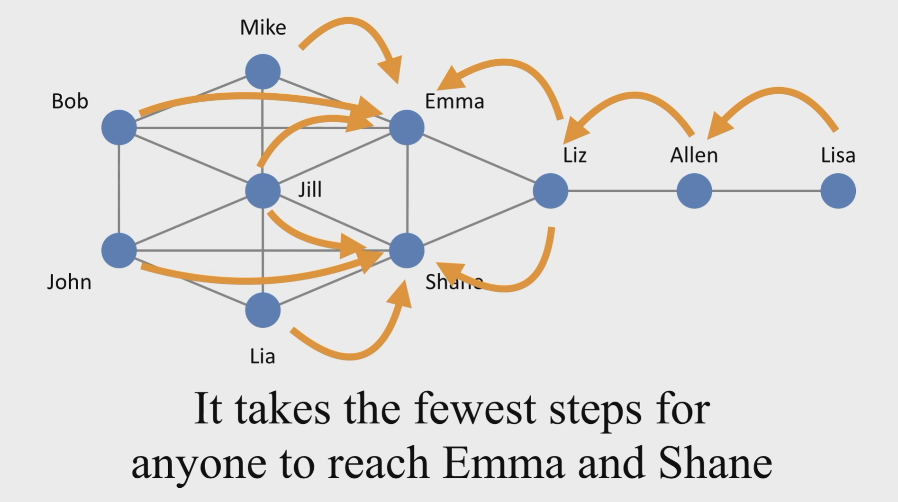
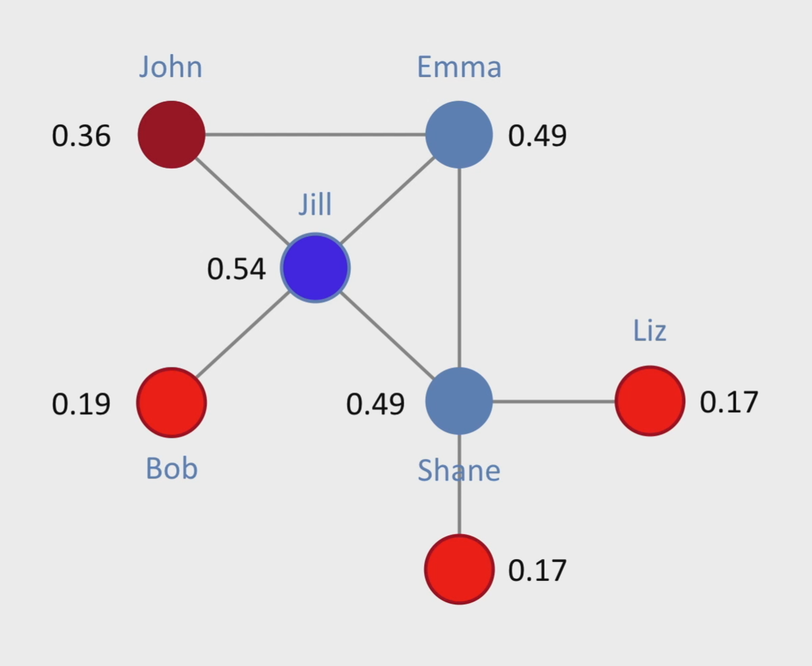
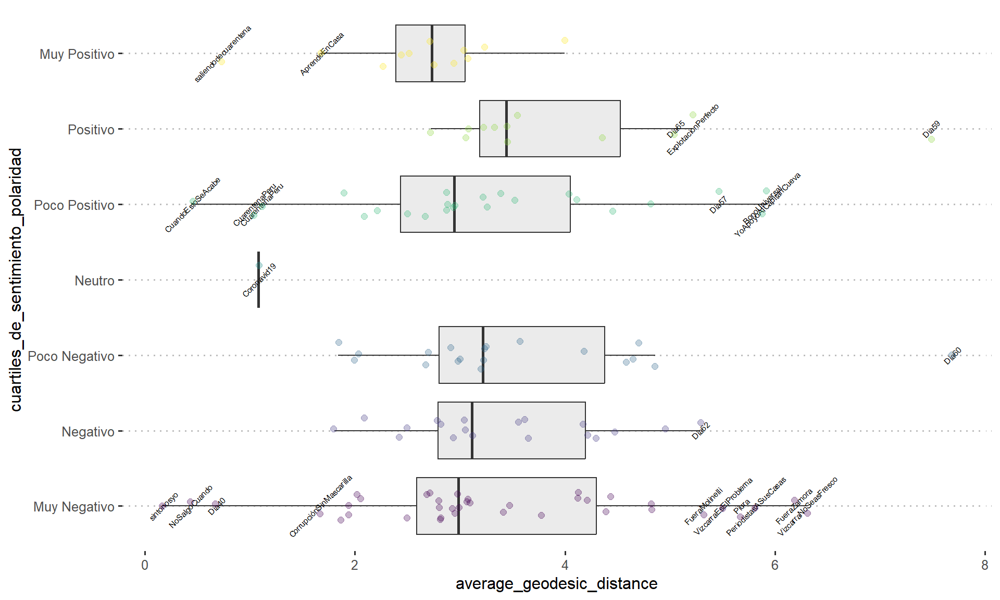
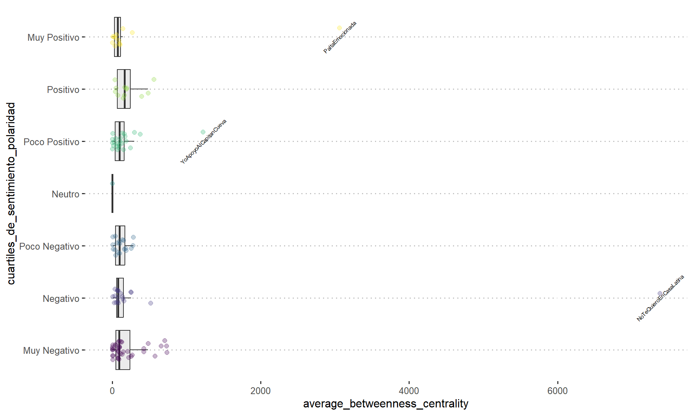
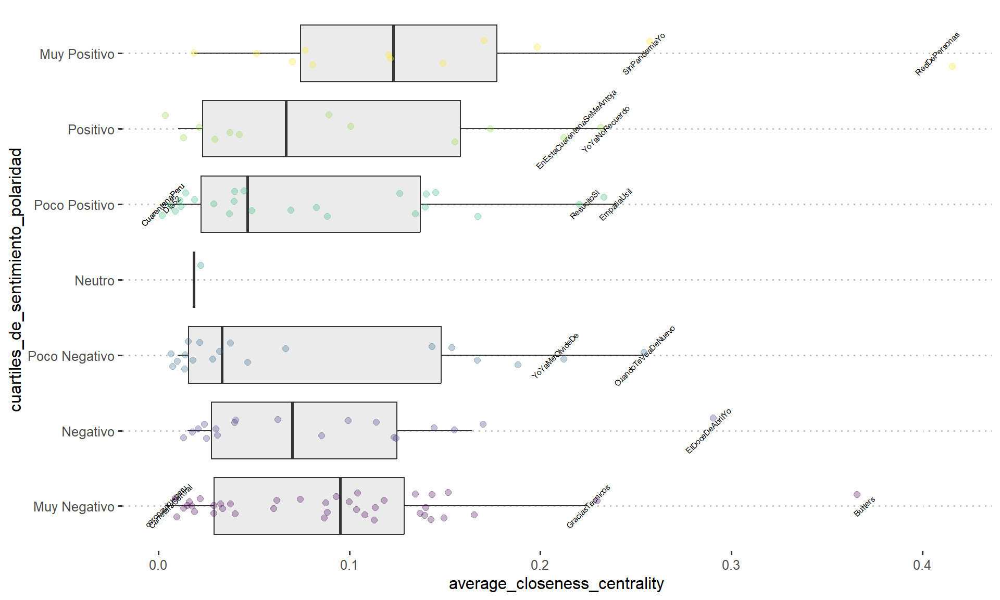
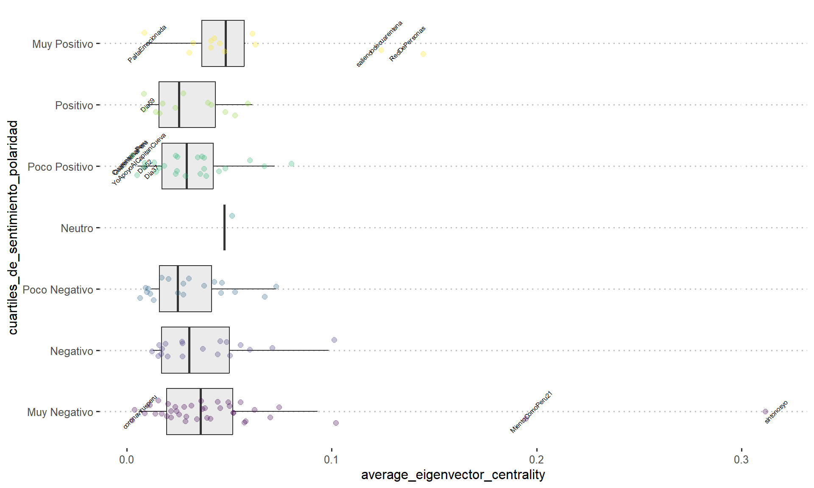
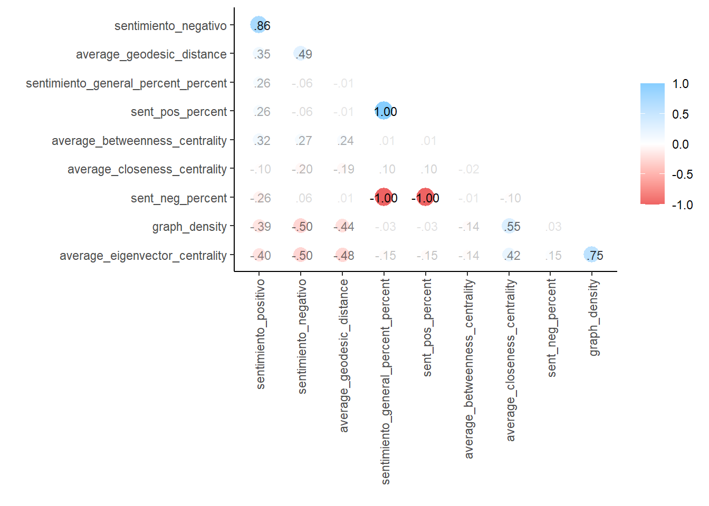
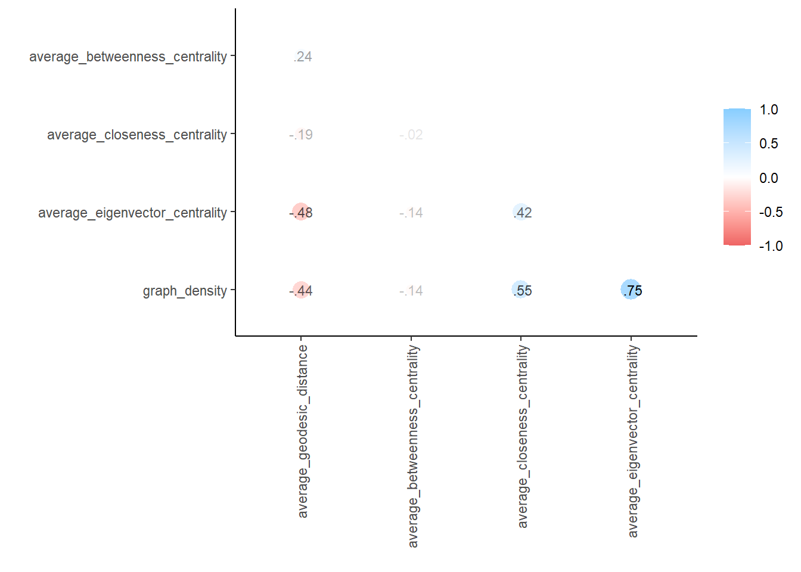
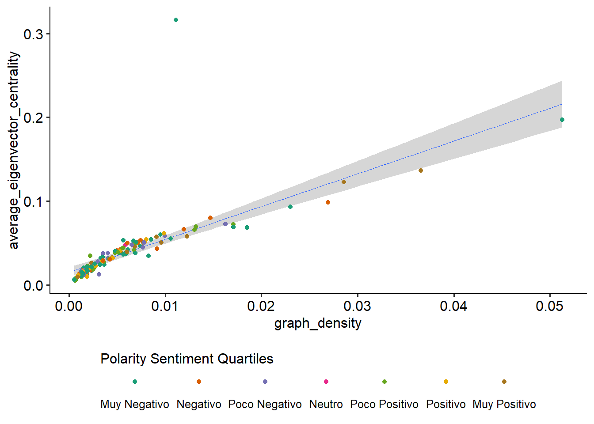
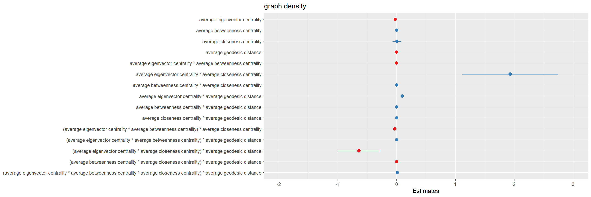

2. Revisión de la base de datos Hashtags
Objetivo
- Realizar las técnicas disponibles en R que responden a la pregunta de investigación: “El uso de Twitter durante la cuarentena del COVID-19: Entre la confrontación política y la resiliencia ciudadana”
- Hipótesis: la necesidad de expresión se trasladó a Twitter dado que habían restricciones de movilidad en pandemia.
- En redes sociales hubo un movimiento tanto de apoyo mutuo-resiliencia como de discusión y erupción política.
- Hipótesis: la necesidad de expresión se trasladó a Twitter dado que habían restricciones de movilidad en pandemia.
Exploración de cada variable
De manera previa, recogemos las definiciones asociadas con los indicadores calculados por el NODE XL:
| Indicadores | Definiciones | Ejemplo |
|---|---|---|
| Average geodesic Distance | El promedio del número de interacciones mínimas que un usuario tendrá que realizar para estar en contacto con cualquier otro usuario que también haya utilizado el Hashtag. Es decir que mientras menor sea la distancia geodésica, la información se esparse con mayor rapidez1, dado que hay menos intermediadores entre un actor y otro. Este indicador se asocia al fenómeno small-world effect. |  |
| Average betweeness centrality | La capacidad de los usuarios que utilizaron un hashtag para servir como puente entre un usuario que busca información y otro capaz de ofrecerla. En este caso, el promedio alude entre los usuarios de su poder para controlar el flujo de la información, dado que un nodo que sirve mediador o puente entre diferentes nodos tiene mayor control sobre la red. La centralidad de intermediación de cada vértice refiere al número de caminos cortos (shortest paths) que pasan a través de este vértice2. |
 |
| Average closeness centrality | El nivel de implicación de los usuarios en torno al hashtag. También derivará en el tiempo que le toma a un usuario acceder a la información que se encuentra circulando. A mayor cercanía, mayor nivel de acceso a la información y mayor poder de influencia en la red. La centralidad de la cercanía refiere sobre todo a los nodos que son accesibles para la red con la menor cantidad de intermediaciones o saltos3. |
 |
| Average eigenvector centrality | Nivel en el que un usuario interactúa con otros usuarios que tienen buenas conexiones con la red del hashtag. En este sentido, va un paso más allá que en la medida de los grados. Es una medida de influencia basado en la cantidad de nodos “populares” que se conectan con un nodo4. |
 |
| Graph density | Es el número de intereacciones reales que tienen los usuarios que utilizaron el Hashtag en relación al número de interacciones que ocurrirían si todos interactuarán entre sí. Se trata de una medida de cohesión entre los usuarios. A mayor densidad, mayor calidad de vínculos y mayor flujo de información |
Se realiza una explicación de la distribución de cada variable a fin de identificar los hashtags más llamativos.

- Mientras menor sea la distancia geodésica, menor es el número de interacciones mínimas que un usuario tendrá que realizar para conectarse con otro usuario; es decir, la información se esparce con mayor rapidez. Los hashtags con menor distancia geodésica son:
Hashtags muy positivos: saliendodecuarentena, AprendeEnCasa.
Hashtags poco positivos: CuandoEstoSeAcabe, CuarentenaPeru (x2).
Hashtag neutro: Coronovaid19.
Hashtags muy negativos: sintonosyo, NoSalgoCuando, Dia40, CorrupciónSinMascarilla

- Mientras mayor sea la centralidad de intermediación, mayor será el poder de los usuarios para poder controlar el flujo de la información en la red, además es una medida de cohesión de la red. Los hashtags con mayor centralidad de intermediación son:
Hashtags muy positivos: PaltaEmocionada.
Hashtags poco positivos: YoApoyoAlCapitanCueva.
Hashtags negativos: NoTeQuieroEnCasaLatina

- Mientras mayor sea la centralidad de la cercanía, más implicados en la red se encuentran los usuarios al acceder a las interacciones desde varias fuentes. Los hashtags con mayor centralidad de cercanía son:
Hashtags muy positivos: RedDePersonas, SinPandemiaYo.
Hashtags positivos: YoYaNoRecuerdo, EnEstaCuarentenaSeMeAntoja.
Hashtags poco positivos: ResucitoSi, EmpatiaUsil.
Hashtags poco negativos: YoYaMeOlvideDe, CuandoTeVeaDeNuevo.
Hashtags negativos: ElDoceDeAbrilYo
Hashtags muy negativos: GraciasTecnicos, Butters

- Mientras mayor sea la centralidad del eigenvector, mejores conexiones tienen los nodos entre sí, por lo que es una medida de influencia. Los hashtags con mayor centralidad del eigenvector son:
Hashtags muy positivos: saliendodecuarentena, RedDePersonas.
Hashtags muy negativos: MientoComoPeru21, sintonosyo.
Correlación entre las variables
Una vez revisado los conceptos principales, se realiza una matriz de correlación entre las variables calculadas por el NODE XL:

La Figura 6 muestra el conjunto de variables siendo correlacionadas unas con otras. Sin embargo, no tiene mucho sentido correlacionar las variables de sentimiento entre sí; ya que, es evidente que a mayor sentimiento positivo menor negativo por lo que en la siguiente matriz se opta por filtrar las variables de sentieminto.

Al explorar la matriz de la Figura 7 vemos que existe un coeficiente R de Pearson de + 0.75 lo cual es algo llamativo. Por lo que se profundiza en esta relación en el siguiente gráfico.

Call:
lm(formula = graph_density ~ average_eigenvector_centrality,
data = hashtags)
Residuals:
Min 1Q Median 3Q Max
-0.034919 -0.001221 -0.000774 0.000066 0.022424
Coefficients:
Estimate Std. Error t value Pr(>|t|)
(Intercept) 0.0004268 0.0006084 0.701 0.484
average_eigenvector_centrality 0.1442112 0.0113862 12.665 <2e-16 ***
---
Signif. codes: 0 '***' 0.001 '**' 0.01 '*' 0.05 '.' 0.1 ' ' 1
Residual standard error: 0.004673 on 124 degrees of freedom
Multiple R-squared: 0.564, Adjusted R-squared: 0.5605
F-statistic: 160.4 on 1 and 124 DF, p-value: < 2.2e-16
Call:
lm(formula = graph_density ~ average_eigenvector_centrality *
average_betweenness_centrality * average_closeness_centrality *
average_geodesic_distance, data = hashtags)
Residuals:
Min 1Q Median 3Q Max
-0.0042199 -0.0011287 -0.0000791 0.0006953 0.0080597
Coefficients:
Estimate
(Intercept) 5.296e-03
average_eigenvector_centrality -2.350e-02
average_betweenness_centrality 2.383e-05
average_closeness_centrality 5.251e-03
average_geodesic_distance -2.562e-03
average_eigenvector_centrality:average_betweenness_centrality -2.451e-03
average_eigenvector_centrality:average_closeness_centrality 1.929e+00
average_betweenness_centrality:average_closeness_centrality 9.873e-04
average_eigenvector_centrality:average_geodesic_distance 9.411e-02
average_betweenness_centrality:average_geodesic_distance 5.550e-06
average_closeness_centrality:average_geodesic_distance 2.734e-03
average_eigenvector_centrality:average_betweenness_centrality:average_closeness_centrality -3.167e-02
average_eigenvector_centrality:average_betweenness_centrality:average_geodesic_distance 2.358e-06
average_eigenvector_centrality:average_closeness_centrality:average_geodesic_distance -6.404e-01
average_betweenness_centrality:average_closeness_centrality:average_geodesic_distance -3.166e-04
average_eigenvector_centrality:average_betweenness_centrality:average_closeness_centrality:average_geodesic_distance 1.178e-02
Std. Error
(Intercept) 1.212e-03
average_eigenvector_centrality 1.238e-02
average_betweenness_centrality 2.401e-05
average_closeness_centrality 3.644e-02
average_geodesic_distance 4.469e-04
average_eigenvector_centrality:average_betweenness_centrality 1.393e-03
average_eigenvector_centrality:average_closeness_centrality 4.096e-01
average_betweenness_centrality:average_closeness_centrality 2.342e-04
average_eigenvector_centrality:average_geodesic_distance 1.163e-02
average_betweenness_centrality:average_geodesic_distance 3.354e-06
average_closeness_centrality:average_geodesic_distance 1.281e-02
average_eigenvector_centrality:average_betweenness_centrality:average_closeness_centrality 6.713e-03
average_eigenvector_centrality:average_betweenness_centrality:average_geodesic_distance 2.137e-04
average_eigenvector_centrality:average_closeness_centrality:average_geodesic_distance 1.787e-01
average_betweenness_centrality:average_closeness_centrality:average_geodesic_distance 6.853e-05
average_eigenvector_centrality:average_betweenness_centrality:average_closeness_centrality:average_geodesic_distance 2.133e-03
t value
(Intercept) 4.370
average_eigenvector_centrality -1.898
average_betweenness_centrality 0.993
average_closeness_centrality 0.144
average_geodesic_distance -5.732
average_eigenvector_centrality:average_betweenness_centrality -1.759
average_eigenvector_centrality:average_closeness_centrality 4.710
average_betweenness_centrality:average_closeness_centrality 4.217
average_eigenvector_centrality:average_geodesic_distance 8.094
average_betweenness_centrality:average_geodesic_distance 1.655
average_closeness_centrality:average_geodesic_distance 0.213
average_eigenvector_centrality:average_betweenness_centrality:average_closeness_centrality -4.718
average_eigenvector_centrality:average_betweenness_centrality:average_geodesic_distance 0.011
average_eigenvector_centrality:average_closeness_centrality:average_geodesic_distance -3.583
average_betweenness_centrality:average_closeness_centrality:average_geodesic_distance -4.620
average_eigenvector_centrality:average_betweenness_centrality:average_closeness_centrality:average_geodesic_distance 5.522
Pr(>|t|)
(Intercept) 2.83e-05
average_eigenvector_centrality 0.060324
average_betweenness_centrality 0.323046
average_closeness_centrality 0.885679
average_geodesic_distance 8.79e-08
average_eigenvector_centrality:average_betweenness_centrality 0.081328
average_eigenvector_centrality:average_closeness_centrality 7.27e-06
average_betweenness_centrality:average_closeness_centrality 5.11e-05
average_eigenvector_centrality:average_geodesic_distance 8.46e-13
average_betweenness_centrality:average_geodesic_distance 0.100772
average_closeness_centrality:average_geodesic_distance 0.831336
average_eigenvector_centrality:average_betweenness_centrality:average_closeness_centrality 7.04e-06
average_eigenvector_centrality:average_betweenness_centrality:average_geodesic_distance 0.991216
average_eigenvector_centrality:average_closeness_centrality:average_geodesic_distance 0.000507
average_betweenness_centrality:average_closeness_centrality:average_geodesic_distance 1.05e-05
average_eigenvector_centrality:average_betweenness_centrality:average_closeness_centrality:average_geodesic_distance 2.26e-07
(Intercept) ***
average_eigenvector_centrality .
average_betweenness_centrality
average_closeness_centrality
average_geodesic_distance ***
average_eigenvector_centrality:average_betweenness_centrality .
average_eigenvector_centrality:average_closeness_centrality ***
average_betweenness_centrality:average_closeness_centrality ***
average_eigenvector_centrality:average_geodesic_distance ***
average_betweenness_centrality:average_geodesic_distance
average_closeness_centrality:average_geodesic_distance
average_eigenvector_centrality:average_betweenness_centrality:average_closeness_centrality ***
average_eigenvector_centrality:average_betweenness_centrality:average_geodesic_distance
average_eigenvector_centrality:average_closeness_centrality:average_geodesic_distance ***
average_betweenness_centrality:average_closeness_centrality:average_geodesic_distance ***
average_eigenvector_centrality:average_betweenness_centrality:average_closeness_centrality:average_geodesic_distance ***
---
Signif. codes: 0 '***' 0.001 '**' 0.01 '*' 0.05 '.' 0.1 ' ' 1
Residual standard error: 0.002073 on 110 degrees of freedom
Multiple R-squared: 0.9239, Adjusted R-squared: 0.9135
F-statistic: 88.99 on 15 and 110 DF, p-value: < 2.2e-16A partir de acá se realizaron distintas regresiones considerando la variable “General Sentiment Percentage”; sin embargo, para todos los casos la relación fue cercana a nula, es decir, no se pudo rechazar la hipótesis 0.
Adicional: ¿Cómo interpretar una regresión lineal?
Constatar que el p-value es menor o igual a 0.05 (*).
Revisar que el R² ajustado se encuentre cerca a 1. Mientras más cerca a uno, mayor será la variabilidad explicada por el modelo.
De preferencia que el t-test sea mayor o igual a 2.
Average geodesic distance
Average geodesic distance o promedio de la distancia geodésica: es el promedio del número de interacciones mínimas que un usuario tendrá que realizar para estar en contacto con cualquier otro usuario que también haya utilizado el hashtag.

Call:
lm(formula = sentimiento_general_percent_percent ~ average_geodesic_distance,
data = hashtags)
Residuals:
Min 1Q Median 3Q Max
-56.366 -8.906 1.049 9.141 60.637
Coefficients:
Estimate Std. Error t value Pr(>|t|)
(Intercept) -3.4110 4.7012 -0.726 0.469
average_geodesic_distance -0.1148 1.3117 -0.088 0.930
Residual standard error: 19.9 on 124 degrees of freedom
Multiple R-squared: 6.179e-05, Adjusted R-squared: -0.008002
F-statistic: 0.007662 on 1 and 124 DF, p-value: 0.9304P-value no es significativo.
R² ajustado es muy bajo.
Graph density
Graph density o densidad del gráfico: Es el número de interacciones reales que tienen los usuarios que utilizaron el Hashtag en relación al número de interacciones que ocurrirían si todos interactuaran entre sí. Se trata de una medida de cohesión entre los usuarios. A mayor densidad, habrá mayor calidad de vínculos y mayor flujo de información.


Call:
lm(formula = sentimiento_general_percent_percent ~ graph_density,
data = hashtags)
Residuals:
Min 1Q Median 3Q Max
-52.301 -9.202 1.016 9.227 62.881
Coefficients:
Estimate Std. Error t value Pr(>|t|)
(Intercept) -3.270 2.338 -1.398 0.164
graph_density -86.374 252.370 -0.342 0.733
Residual standard error: 19.89 on 124 degrees of freedom
Multiple R-squared: 0.0009438, Adjusted R-squared: -0.007113
F-statistic: 0.1171 on 1 and 124 DF, p-value: 0.7327P-value no es significativo.
R² ajustado es muy bajo.
Average betweeness centrality
Average betweeness centrality o promedio de la centralidad de intermediación: La capacidad de los usuarios que utilizaron el hashtag para servir como puente entre un usuario que busca información y otro capaz de ofrecerla. En este caso, el promedio alude entre los usuarios de su poder para controlar el flujo de la información.


Call:
lm(formula = sentimiento_general_percent_percent ~ average_betweenness_centrality,
data = hashtags %>% filter(average_betweenness_centrality <
800))
Residuals:
Min 1Q Median 3Q Max
-57.964 -8.715 0.579 8.698 59.094
Coefficients:
Estimate Std. Error t value Pr(>|t|)
(Intercept) -1.94519 2.39513 -0.812 0.418
average_betweenness_centrality -0.01477 0.01109 -1.331 0.186
Residual standard error: 19.76 on 121 degrees of freedom
Multiple R-squared: 0.01443, Adjusted R-squared: 0.006286
F-statistic: 1.772 on 1 and 121 DF, p-value: 0.1857P-value no es significativo.
R² ajustado es muy bajo.
Average closeness centrality
Average closeness centrality o promedio de la centralidad de la cercanía: El nivel de implicación de los usuarios en torno al hashtag. También derivará en el tiempo que le toma a un usuario acceder a la información que se encuentra circulando. A mayor cercanía, mayor nivel de acceso a la información y mayor poder de influencia en la red.

Call:
lm(formula = sentimiento_general_percent_percent ~ average_closeness_centrality,
data = hashtags)
Residuals:
Min 1Q Median 3Q Max
-58.158 -9.111 0.457 10.483 61.451
Coefficients:
Estimate Std. Error t value Pr(>|t|)
(Intercept) -6.011 2.682 -2.242 0.0268 *
average_closeness_centrality 24.836 22.604 1.099 0.2740
---
Signif. codes: 0 '***' 0.001 '**' 0.01 '*' 0.05 '.' 0.1 ' ' 1
Residual standard error: 19.8 on 124 degrees of freedom
Multiple R-squared: 0.009642, Adjusted R-squared: 0.001655
F-statistic: 1.207 on 1 and 124 DF, p-value: 0.274P-value no es significativo.
R² ajustado es muy bajo.
Average eigenvector centrality
Average eigenvector centrality o promedio de la centralidad eigenvectorial: El nivel en el que un usuario interactúa con otros usuarios que tienen buenas conexiones con la red del hashtag. En este sentido, va un paso más allá que en la medida de los grados.


Call:
lm(formula = sentimiento_general_percent_percent ~ average_eigenvector_centrality,
data = hashtags %>% filter(average_eigenvector_centrality <
0.12))
Residuals:
Min 1Q Median 3Q Max
-50.345 -8.794 1.057 9.140 58.920
Coefficients:
Estimate Std. Error t value Pr(>|t|)
(Intercept) -2.414 3.206 -0.753 0.453
average_eigenvector_centrality -42.278 81.841 -0.517 0.606
Residual standard error: 17.72 on 120 degrees of freedom
Multiple R-squared: 0.002219, Adjusted R-squared: -0.006096
F-statistic: 0.2669 on 1 and 120 DF, p-value: 0.6064P-value no es significativo.
R² ajustado es muy bajo.
Cuadrantes estandarizados
Una posibilidad es estandarizar las variables de centralidad y densidad para ver cómo se relacionan estas variables. Sin embargo, el problema es que se tienen alrededor de 4-5 hashtags que tienen valores muy diferentes al promedio (outliers) y sesgan la estandarización (skewness). Se debería tomar alguna decisión acerca de estos hashtags.
- Average geodesic distance
- Graph density
- Average betweeness centrality
- Average closeness centrality
- Average eigenvector centrality
Average betweeness centrality vs. average closeness centrality


Notas
Para mayor información acerca de la distancia geodésica visitar el siguiente link.↩︎
Más información sobre betweenness centrality en el siguiente link.↩︎
Para mayor información sobre closeness centrality entrar al siguiente link.↩︎
Para más información sobre eigenvector centrality revisar el siguiente link.↩︎